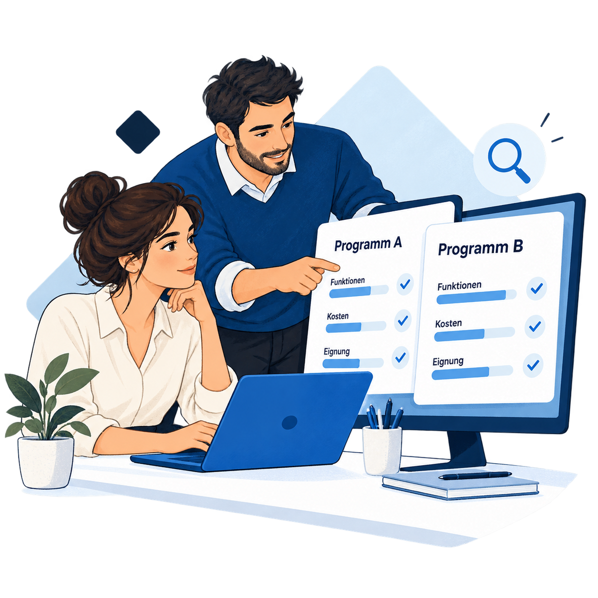
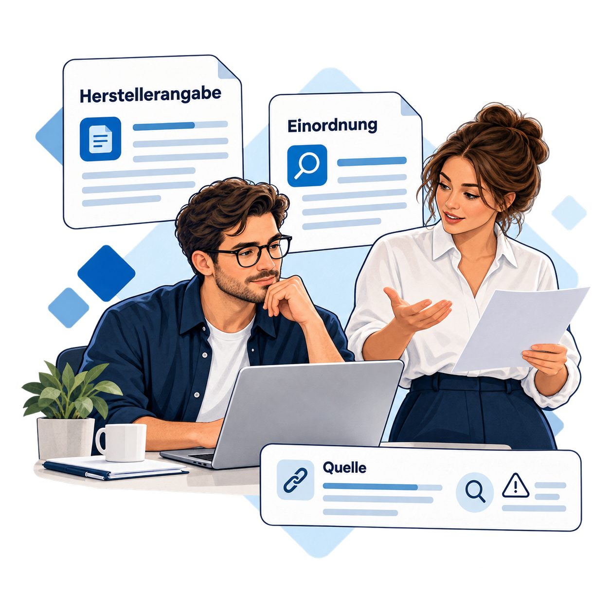

Bildgalerie
Bilder für die passende Software.
Sechs Motive für Büroalltag, Softwareauswahl und redaktionelle Einordnung. Abgestimmt auf die Farben von Startkontor, mit deutschen Beschriftungen.
Hintergrund:
Alle Bilder herunterladen ↓
Fotocollage · transparent
Softwareauswahl
Fotocollage für die Suche nach einer passenden Software.

Bürofoto
Büroteam
Eine gemeinsame Entscheidung im Büroalltag.

Fotocollage · transparent
Beratung
Ein freundliches Porträt für Beratung und Orientierung.


Illustration · transparent
Softwarevergleich
Funktionen, Kosten und Eignung übersichtlich gegenüberstellen.


Illustration · transparent
Quellenprüfung
Herstellerangaben und redaktionelle Einordnung verständlich zeigen.

Illustration · transparent
Softwareplanung
Vom Bedarf zur Auswahl – gemeinsam mit dem Team.